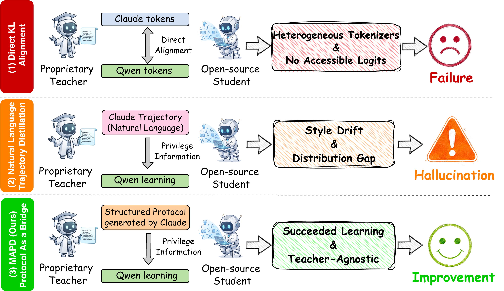
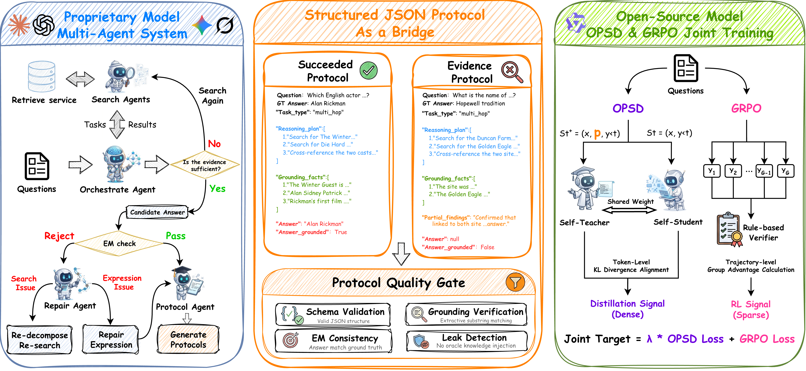
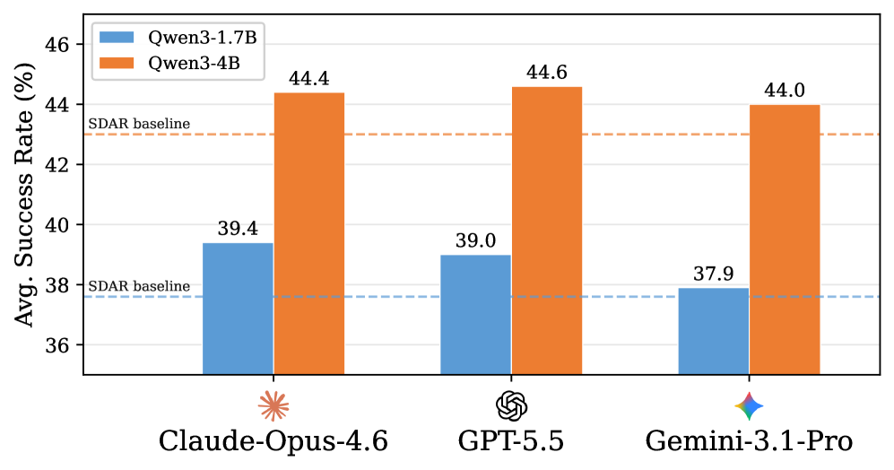
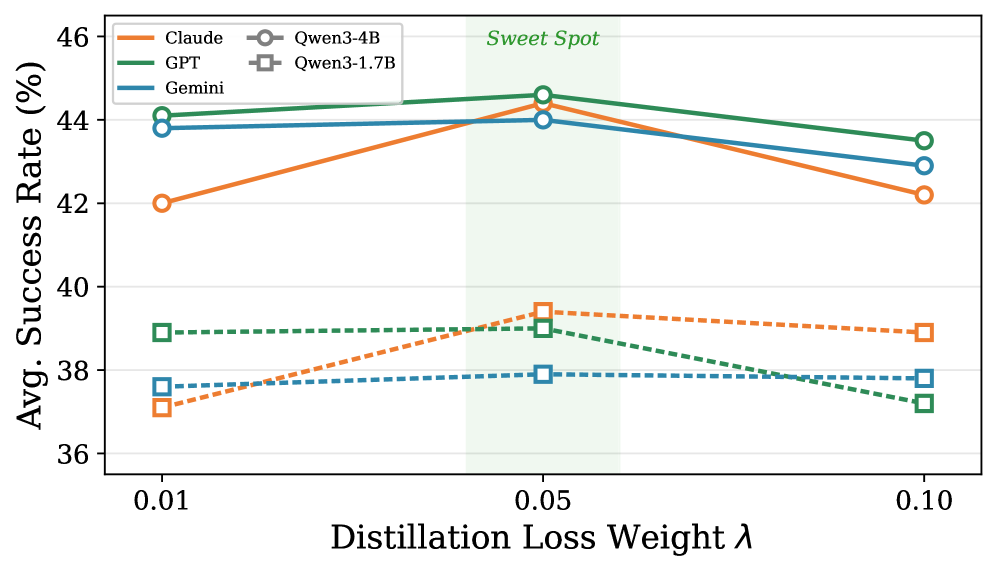
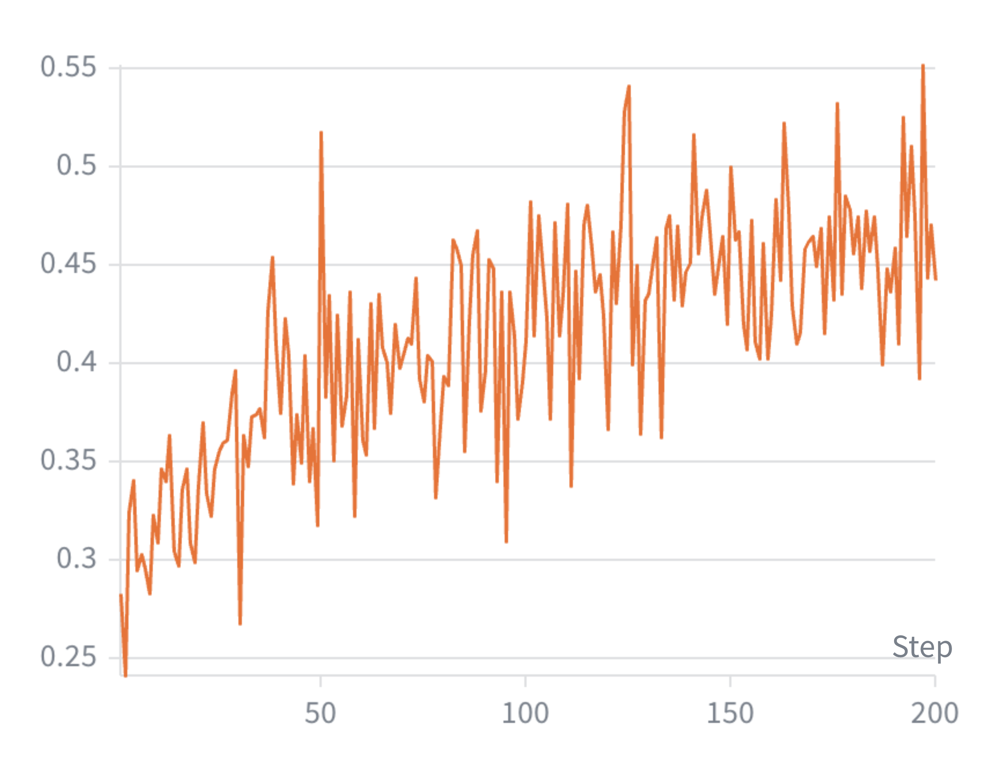

Agentic Search让LLM在推理中穿插检索来解题，但基于结果的RL只提供稀疏奖励。从闭源模型蒸馏知识可以补充密集指导，但logit匹配被隐藏logits和不兼容tokenizer阻断，原始自然语言轨迹模仿则传递风格垃圾而非推理能力。 MAPD用结构化JSON协议作为中间表示，通过多Agent系统离线合成高质量协议，再以特权信息形式注入学生策略的OPSD自蒸馏分支，与GRPO联合优化。
Agentic Search中，模型需要多步推理穿插检索来解答知识密集型问题。基于结果的RL只提供最终答案正确与否的稀疏奖励。在线策略蒸馏（OPD）通过token级分布对齐补充密集指导，但效果严格依赖高质量的教师策略。利用闭源模型作为教师面临两大障碍。
第一，传统OPD依赖token级KL散度对齐，但异构tokenizer差异和不可获取的教师logits使数学对齐无法定义。第二，自然语言轨迹蒸馏在Agentic场景中频繁失败：强制学生模仿闭源模型的冗长和独特推理风格，加剧分布鸿沟，导致严重的风格漂移和幻觉。

MAPD将离线协议合成与在线策略对齐分离。离线阶段，由闭源模型驱动的多Agent系统分解query、检索证据、修复失败搜索，并将探索轨迹转化为JSON协议。训练阶段，此协议被格式化为特权信息注入学生策略的条件分支。由于特权分支和学生分支共享同一模型，它们的分布通过密集的自蒸馏目标对齐，与稀疏的基于结果的RL目标互补。通过结构化协议而非自由形式的自然语言轨迹蒸馏，MAPD减少了学生对教师特有的冗长和格式伪影的暴露。闭源模型和MAS仅用于离线协议合成，推理时零开销。

JSON协议包含五个核心维度：Task Type（single_hop/multi_hop/comparison/others，决定认知策略）、Reasoning Plan（有序的可行子目标）、Grounding Facts（从环境中提取的证据集）、Partial Findings（搜索失败时记录中间发现）、Answer Verification（最终答案 + answer_grounded布尔标志）。核心认知策略与闭源模型的表层语言模式被有效解耦。
Stage A - 多Agent协同搜索：Orchestrator将query分解为子任务并标注依赖关系，并行派发给Searcher代理。Searcher向Wikipedia发出多次查询并压缩结果。Orchestrator合成所有findings，证据不足时额外分解。初始搜索后做Exact Match检查。如果失败，Repair代理利用ground-truth答案作为诊断指导回溯推理链（但绝不让GT答案泄漏到探索日志和检索查询中），诊断失败原因并触发重试。
Stage B - 协议生成：Protocolizer代理将探索日志编译为结构化JSON。成功轨迹生成Succeeded Protocol；搜索未收敛时生成Evidence Protocol（省略答案，代之以部分发现的中立摘要）。两个硬约束：无后见之明（reasoning_plan严禁提及最终结果）和提取式基础（grounding_facts必须是检索段落中的逐字子串）。
Stage C - 质量门控：Schema验证、EM一致性、基础验证、泄漏检测。失败的协议被丢弃。手动审查确认该管线在3000实例上达到99.33% 合格率。
训练目标L(θ) = λ_OPSD·L_OPSD(θ) + L_GRPO(θ)。L_OPSD提供token级蒸馏信号（来自结构化协议），实现高效的逐步信用分配。L_GRPO提供稀疏RL信号。λ_OPSD控制蒸馏强度：太小（0.01）导致蒸馏信号过早消失；太大（0.1）驱动学生走向无推理的捷径行为：响应长度从135 token骤降至约42 token，多跳任务崩溃。λ=0.05实现最佳平衡。

在7个QA基准上评估。MAPD在Qwen3-1.7B上平均39.4%，在Qwen3-4B上平均44.4%，一致超越所有基线。 多跳任务上的增益更显著（1.7B上7.9% vs单跳2.3%），与MAS系统化分解复杂查询的设计意图一致。

纯OPSD在Agentic Search下灾难性崩溃（1.7B降至5.9%）。结构化协议是跨模型蒸馏的关键：用原始自然语言轨迹直接蒸馏反而损害性能（低于无蒸馏基线），替换为结构化协议后带来7.0分增益。三种闭源教师（Claude/GPT/Gemini）上的结果仅差2分以内，证明协议成功抽象了教师的独特风格。
成本分析：25,600训练实例的MAS管线合成成本约 $1,454（$0.057/实例），全程离线缓存，一次性支出。

参考：https://arxiv.org/abs/2607.24280